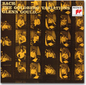

|

いつからこんな世の中になったのだろう？ 音が粗末に扱われている。粗製濫造、使い捨て。ゴミ同然に垂れ流される音、音、音……。誰もまともに聞きやしない。うるさがられて嫌われて、あるいは無視されて、やがて虚空に十把一からげに消えていく。一つ一つの音がどんな音色で、どんな表情で鳴っていたかなんて、誰も知りやしない。誰の耳にもとまることもなく、心にすみつくこともなく、放り出されて消えて行く無数の音たち。
駅前の小さなCDショップ。土地柄、いつも大音量で演歌を流している。それはそれでいい。だが、すぐ隣の飲食店が、クラブ系のチャカチャカした音楽をこれまた大音量で流している。その前を通りかかったときの感覚といったら、これほどシュールなものはないと思えるほどおぞましいものだった。１秒たりとも、そこにいたくなかった。
スーパーで買い物をしていて、頭が痛くなった。売り場ごとに「さかな、さかな、さかな〜〜♪」みたいなテーマソングと、カセットテープに吹き込まれた特売のアナウンスが繰り返される。もういいよ、わかったからほっといて、と言いたくなる。そこに全館に流れるBGMがかぶさると、もうわけのわからない轟音の渦巻く世界だ。落ち着いて買い物などできるわけがない。
物売りの声や音。昔は風情があった。チリンチリンと鈴を鳴らしながら屋台を引いてくるおでん屋さんも、ラッパを吹きながら自転車でやってくる豆腐屋さんも、もう見かけなくなった。「石焼きいも」も今ではテープに吹き込んだ声を拡声器で流している。拡声器のボリュームをいっぱいにして、ノロノロ運転で巡回する某業者さん。日曜の朝っぱらから営業ご苦労さま。街中の人の耳は、そこまで衰えていないと思う。
街にあふれる音は色とりどりで、ケバケバしく、互いに目立とうと張り合うだけで共存の意志はなく、街にあふれる広告とまったく同じ。自分の主張ばかりで、他人の意見をまったく聞かない討論会とまったく同じ。大音量には大音量で対抗し、それがどんどんエスカレートする。どこまでいけば気がすむのか。
演奏家は一つ一つの音を、手のひらに乗せていつくしみ、いたわるようにして、丹念に磨き上げ、慎重に静寂の中に放り込む。音の一つ一つに命を吹き込むのである。ピアニストは、この「ド」の音をどんな音にしようか、どんな色にしようか、どんな表情を持たせようか、鍵盤に落とす指のタッチを微妙に加減しながら、耳を研ぎ澄まし、心を安らかにし、集中して、これだという音を決めていく。一つ一つの音、一つ一つの和音、一つ一つのフレーズ、休符という音のない沈黙にさえ意味を持たせ、命を与える。その緻密な作業の結果、人の心に響く音楽が生まれるのである。即興演奏にあっても、瞬時にその作業が繰り返されているのである。
それを受け取る聴者もまた、真剣勝負でその音楽を、一つ一つの音を受けとめていく。演奏者の意図した色と違う色が見えるかもしれない。違う表情を感じるかもしれない。そこに音楽の面白さ、楽しさがあるのであって、同じ曲にも、作曲者・演奏者・聴者それぞれの解釈や感じ方がある。むしろ、そんなふうにいろいろに感じ取れる豊かさを持った音楽の方がおもしろい。テンポや強弱、まして曲想についての細かな指定がない、いわば無着色の音楽ほど、演奏しても聴いても様々な感性の広がりを可能にしている。バッハなどのバロック音楽や、大まかなメロディー・ラインとコードだけがあって、自由に展開していくジャズなどがそうだ。水墨画やモノクロ写真の世界に共通しているかもしれない。
そんな世界がある一方で、まったくいい加減に粗雑な音を垂れ流す行為がまかりとおっている。音を音とも思わない、音を大切に扱わない、音を無理やり聞かそうと、ただやみくもに音量を上げ、どなり声の応酬になってもほったらかし。そんな音には誰も耳をかさず、その存在すら無視し嫌悪する。これでは音がかわいそうだ。音に人権ならぬ「音権」があるとすれば、基本的音権の侵害も甚だしい。まさに音の虐待だ。
音はきちんと聴き入れられてこそ、存在価値があるというものだ。かつて、日本人は静寂を愛し、静寂の中に飛び込む一点の音に心をゆだねた。ししおどし。蛙飛び込む水の音。
かそけき音に宇宙を感じた。そんな感性は、今どこへ行ってしまったのだろう。最先端の音楽の世界では音質の追求が進み、デジタル・サウンドになり、凝ったサウンドが楽しめるようになったが、一方で「音楽」として作られるもの以外の音に対しては、まったく無頓着なのではないか。過保護なくらい大切に扱われる音と、見捨てられた音。そのギャップがどんどん大きくなるような気がしてならない。
チップにダウンロードした音楽を持ち歩いて聴ける時代である。70年代末にCDが登場して以来、家に帰ってレコードをジャケットから引っ張り出し、ゆっくりと針を落として、さあ聴こうという感覚は忘れられていった。ジャケットの絵や写真を眺めながらレコードが擦り切れるまで聴き込んで、大事に手元に置いておくという時代は、遠い昔になった。何十曲でも、どこでも好きなときに簡単に聴くことができる。使い捨て感覚で音楽や音を消費する。確かにいい音だ。ノイズは排除され、清浄きわまりない音だ。でも、歩きながら、電車に乗りながら、本を読みながら、自分の耳の中だけで鳴る音をどれだけ真剣に聴いているだろう。パチパチというノイズや音の歪みもすべてひっくるめて、静寂の中でただ一点、そのレコードの音に集中する行為のなんと美しいことか。空気を震わす音の一つ一つを拾っていく愉しみは、「ながら聞き」では味わえない。一生懸命聴くと、音はそれに応えてすばらしい表情を見せてくれる。それはもちろんCDでもチップでも同じである。「ながら」やBGMもいいと思う。でも、たまには真剣に音と向き合ってみるといい。大切に作られた音は、大切に聴こう。
|